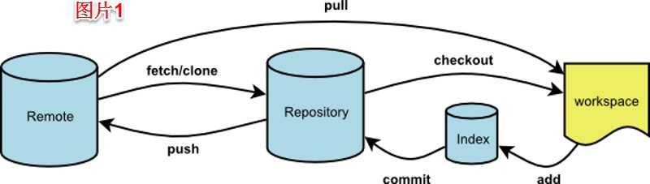
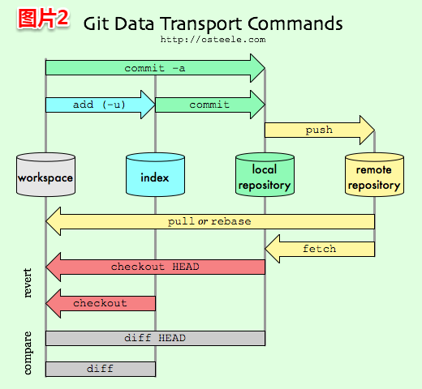

 0 
工作区（workspace）、暂存区（index）、本地仓库（local repository）、远程仓库（remote repository）
git add file1 file2 file3 ... //将工作区更改的内容添加到暂存区
git branch //查看本地分支
git branch 分支名 //创建本地分支
git branch -a //查看本地分支和远程分支
git branch -r //查看远程分支
git branch -d 分支名 //删除本地分支，-D强制删除本地分支
git branch -r -d 远程分支名 //删除远程分支：git branch -r -d origin/dev
git checkout -b 本地分支名 远程库名/远程分支名 //拉取远程分支到本地分支并切换到该分支：git checkout -b dev origin/dev
git checkout -- 文件名 //可以丢弃工作区的修改， 让这个文件回到最近一次commit或add时的状态
git checkout 分支名 //切换分支
git cherry-pick [commit_id] // 从不同的分支中捡出一个单独的commit，并把它和你当前的分支合并
git commit -m "注释" //将暂存区的改动提交到本地库
git commit -a -m "注释" //跳过add，直接将已跟踪过的文件暂存起来一并提交
git commit --amend -m "注释" //将暂存区的改动和上次提交合并为一次提交，上次提交将不再存在，可用于错误提交的修复
git diff 文件名 //比较当前和暂存区文件的差异
git diff --cached 文件名 //比较暂存区和上次提交时文件差异
git diff master origin/master // 本地分支和远程分支的差异
git fetch origin 分支名 //将远程的origin仓库的master分支更新到本地相关联的master分支上
git fetch --all //将所有远程拉取到本地仓库
git init //将当前目录变成git管理的本地仓库
git log -p master..origin/master //查看远程origin库的master分支与本地master分支的差别 git log //显示从近到远的提交日志
git log --pretty=oneline //显示从近到远的简洁的提交日志
git log --graph --pretty=oneline --abbrev-commit //查看分支合并图 git log --all --author='leijun' --since=2016-01-20 --until=2016-07-06 --pretty=tformat: --numstat | gawk '{ add += $1 ; subs += $2 ; loc += $1 - $2 } END { printf "added lines: %s removed lines : %s total lines: %s\n",add,subs,loc }' -
git merge --no-ff -m "注释" 分支名(本地或远程) //将本地分支或远程分支合并到当前本地所在分支 ？？？merge可以将远程分支和本地其他任一分支进行合并吗，思考来源于图片3的写法 git mergetool //当合并有冲突时，打开冲突解决工具
git push origin 分支名 //将本地分支推送到远程相同名的分支
git push origin 本地分支名:远程分支名 //将本地分支推送到远程分支(本地分支名可与远程分支名不同)
git push --delete origin分支名 //强制删除远程origin库的分支
git push origin :分支名 //删除远程分支
git push -u origin 分支名 //将本地分支推送到远程origin库的分支上，如果远程库不存在，创建远程分支，但是远程库分支名必须与本地分支名相同 ？？？
git remote //显示远程库信息
git remote -v //显示远程库的详细信息
git reset --hard 版本号 //将当前版本回退到任一版本，HEAD表示当前版本，HEAD^表示上一个版本，HEAD~100表示从0开始第100个版本
git reflog // 查看所有分支的所有操作记录
git revert 版本号 //撤销某次提交
git rm //相当于删除文件后再add
git stash //备份工作现场
git stash list //查看所有的备份
git stash apply //恢复备份但不删除备份，例：git stash apply stash@{0} 恢复第一个备份
git stash pop //恢复备份同时删除备份
git stash clear //清除所有备份
每隔X秒运行一次git pull
通常，合并冲突出现的原因在于你正在工作的本地仓库不再反映远程仓库的当前状态。这正是我们为什么每天早晨要首先执行一次git pull的缘故。此外，你还可以在后台通过脚本（或是使用GNU Screen）每隔X秒调用一次git pull：
$ screen
$ for((i=1;i<=10000;i+=1)); do sleep X && git pull; done
$ for((i=1;i<=10000;i+=1)); do sleep X && git pull; done
为什么手动修改远程库中的文件后，使用git status仍显示是clean的？ 没有fetch